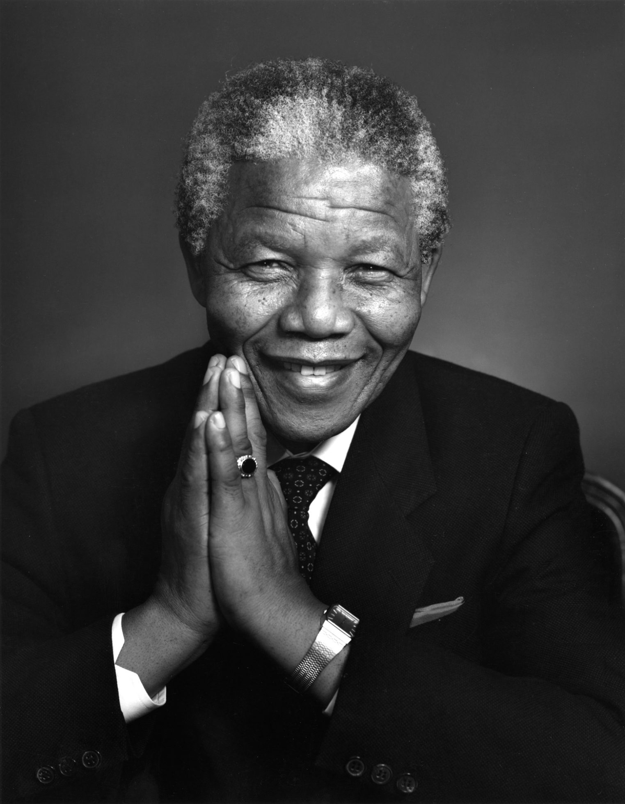

Here's a timeline of Nelson Mandela.
- 1918-1934:Nelson Mandela was born on 18 July 1918 in the village of Mvezo in Umtata, then part of South Africa's Cape Province. Mandela later stated that his early life was dominated by traditional Thembu custom and taboo. He grew up with two sisters in his mother's kraal in the village of Qunu, where he tended herds as a cattle-boy and spent much time outside with other boys. Both his parents were illiterate, but being a Chirstian, his mother sent him to a local Methodist school when he was about seven. Baptisted a Methodist, Mandela was given the English forename of "Nelson" by his teacher.
- 1934-1940:Intending to gain skills needed to become a privy councillor for the Thembu royal house, in 1933 Mendela began his secondary education at Clarkebury Methodist High School in Engcobo, a Western-style institution that largest school for black Africans in Thembuland. Made to socialise with other studtents on an equal basis, he claimed that he lost his "stuck up" attitude, becoming best friends with a girl for the first time; he began playing sports and developed his lifelong love of gardening. He completed his Junior Certificate in two years, and in 1937 moved to Healdtown, the Methodist college in Fort Beaufort attended by most Thembu royalty.
- 1941-1943:Returning to Mqhekezweni in December 1940, fled to Johannesburg via Queenstown, arriving in April 1941. Mandela found work as a night watchman at Crown Mines, his "first sight of South Africa capitalism in action", but was fired when the induna (headman) discovered that he was a runaway.
- 1943-1949:Mendela began studying law at the University of the Witwatersrand, where he was the only black African student and faced racism. There, he befriended liberal and communist European, Jewish, and Indian students, among them Joe Slovo and Ruth First. Becoming increasingly politicised, in August 1943 Mandela in support of a successful bus boycott to reverse fare rises.
- 1950-1954:Mendela took Xuma's place on ANC national executive.
- 1988-1990:In December 1988 Mandela was moved to Victor Verster Prison near Paarl. He was housed in the relative comfort of a warder's house with a personal cook; and used the time to complete his LLB degree. While there, he was permitted many visitors and organized secret communicationa with exiled ANC leader Oliver Tambo.
- 1990-1991:Mendela proceeded on an African tour, meeting supporters and politicians in Zambia, Zimbabwe, Namibia, Libya and Algeria, and countinuing to Sweden, where he was reunited with Tambo, and London, where he appeared at the Nelson Mandela: An International Trubute for a Free South Africa concert at Wembley Stadium in Wembley Park.
- 1991-1992:Mendela remained a key figure for the Convention for a Democratic South Africa (CODESA) begaan in December 1991 at the Johannesburg World Trade Centre, attended by 228 delegates from 19 political parties. Although Cyril Ramaphosa led the ANC's delegation.
- 1994-1999:Mendela was elected as South Africa's first black chief executive. His inauguration took place in Pretoria on 10 May 1994, televised to a billion viewers globally.
- 1999-2004:Retiring in June 1999, Mendela aimed to lead a quiet family life, divided between Johnnesburg and Qunu. Although he set about authoring a sequel to his first autobiography, to be titled The Presidential Years, it was abandoned before publication.
- 2004-2013:In June 2004, aged 85 and amid failing health, Mandela announced that he was "retiring from retirement" and retreating from public life, remarking, "Don't call me, I will call you." Although countinuing to meet with close friends and family, the Foundation discourage invitations for him to appear at public events and denied most interview requests. He retained some involvement in international affairs. In 2005, he founded the Nelson Legacy Trust. In February 2011, Mandela was briefly hospitalised with a respiratory infection, attracting international attention. After suffering from a prolonged respiratory infection, Mendela died on 5 December 2013 at the age of 95, at around 20:50 local time (UTC+2) at his home in Houghton, surrounded by his family